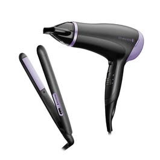
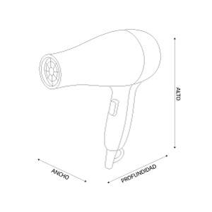
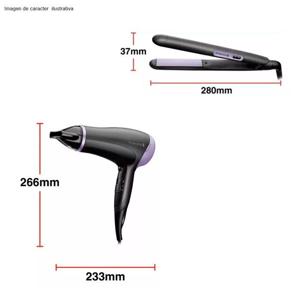
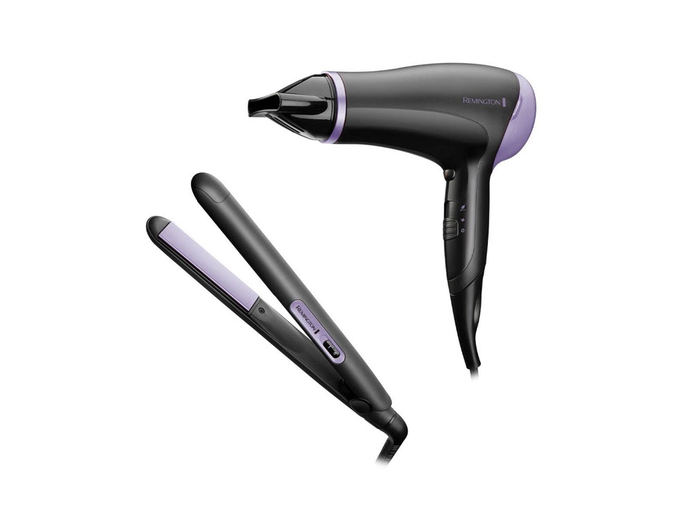

Remington · Modelo D3016GP-110F
El modelo D3016GP-110F de Remington está pensado para un uso práctico y funcional. Entre sus características destacan El Salvador; Promociones; Lo más nuevo; Tv y video Televisores Accesorios de TV Controles de TV Rack y soportes Reproductores de streaming Switches y Splitters.
| Color | Negro |
|---|---|
| Alto | 21.082 cm |
| Ancho | 11.176 cm |
| Profundidad | 28.194 cm |
| Peso | 1.4 kg |
| Potencia | 2000W / 1875W |
| GTIN | 74590557763 |
| Modelo comercial | Style Essentials D3016GP-110F |
| MPN | D3016GP-110F |
| SKU | 469349100015 |
| Tipo de producto | Combo Secadora y plancha |
| Marca | Remington |
| Altura | 21.082 cm |
| Ancho | 11.176 cm |
| Profundidad | 28.194 cm |
Fuente principal: https://www.almacenestropigas.com/honduras/combo-secadora-y-plancha-remington-negro-d3016gp-110f-469349100015/p